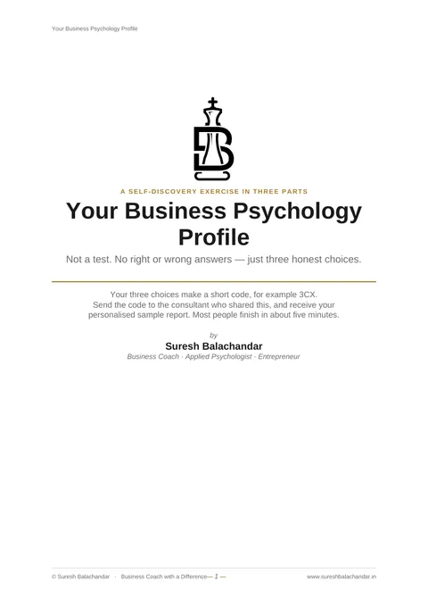

03 · The operator diagnostic · ₹7,500
Business Psychology Profiling
How you think and act when you are under pressure
A business person must understand 2 things, and they are money and people. This is the people half, and it starts with the person running the business. Your pattern is named, and your decisions start coming from clarity.
Apply for a profiling Take the free sample test first
The people half starts free. The sample test takes about 5 minutes, and the sample profile that comes back is written for your code, not copied from a book. Take it now.
- At homethe assessment, in your own time
- Written profileprepared for you, not generated
- 90 minutesthe counselling session
- ₹7,500the whole of it
01 Take this before you pay me anything
The people half starts free.
The sample is a real piece of the work, not a teaser. 3 groups of descriptions, 3 honest choices, and your choices form a short code. Send me the code on WhatsApp and the sample profile written for that code comes back to you immediately, along with an invitation to a free 30 minute conversation about what it surfaced. If the sample tells you enough, keep it and act on it. If you want the whole mirror, that is the full profiling.

About 5 minutesFree sample test
Your Business Psychology Profile, the first glimpse
This is not a test and there are no right or wrong answers. You make 3 honest choices, you get one short code, and a personalised sample profile comes back the moment you send it.
02 Why the operator comes first
Every pattern in your business reflects a pattern in you.
Most business coaching skips the operator. It walks straight into strategy, into systems, into revenue. The advice is usually correct, and the change rarely sticks. The reason is structural rather than a failure of effort.
The founder who avoids hard conversations builds a team that avoids hard conversations. The founder addicted to new ideas builds a company that never finishes anything. The founder who needs everyone to agree builds a business that cannot move quickly.
The founder driven by perfection builds a business that cannot scale, because nothing can be delegated.
Business Psychology Profiling is the work most founders postpone for a decade. The premise is simple. You cannot change the business without first understanding the operator running it.
03 What it actually is
It reads the intention behind your behaviour.
There are many frameworks for understanding personality, and most of them describe what you do well, what energises you, and how you prefer to communicate. They are useful, and they are incomplete, because they keep track of behaviour alone. Behaviour is what you show. The intention behind it is what runs you.
The instrument I use reads intention. What drives you, what you fear most, and what you reach for when you are under stress. It does not tell you how you behave on a good day. It tells you how you behave on the day that matters. There are 9 patterns a person can run on, and one of them is yours.
Which 9, and how they are read, is the instrument itself. I do not publish the instrument. You meet it in the room, where it is read to you rather than handed over, and that is where it is worth something.
04 What you walk away with
You get 4 outcomes, and they are written down rather than promised.
- 01Your pattern, named preciselyOf the 9 patterns, the one that most accurately describes how you operate as a founder. It is not a label. It is a working understanding of the engine that drives your decisions.
- 02The primary blind spot limiting your businessThe strength that, taken too far, has become a trap. The thing you do well that is also the thing keeping the business smaller than it should be.
- 03The secondary challenge that compounds itEvery primary blind spot has a secondary pattern that amplifies it. Both are named, with the specific way each shows up in decisions, hiring, marketing and team.
- 043 immediate action stepsConcrete things you can begin within 7 days, so the trap starts to soften and the gift starts working for you instead of against you.
05 How it works
It runs in 3 parts, which are the assessment, the written profile and the session.
- 01The assessmentA structured questionnaire you complete at home, in your own time. Honest answers matter more than fast ones, and there are no right or wrong ones.
- 02The written profileI score the assessment and write your complete profile. It is prepared for you, not generated, and it reads like a person wrote it because one did.
- 03The counselling sessionIt runs for 90 minutes on Zoom, on Google Meet, or in my room in Chennai. The profile is read with you rather than handed over, and you leave with the 4 outcomes above in writing.
06 Who it is for, and who it is not
Founders who are ready for the harder mirror.
This is for you when
- 01Your business is past the survival stage, and the work in front of you is about getting out of your own way.
- 02You suspect that something about how you operate is limiting the business, and you cannot quite name it. You are willing to have it named.
- 03You can sit with honest feedback without needing to defend it, and you are willing to act on some of it within 15 days.
It is not for you when
- 01You are looking for validation. This will not tell you what you already believe about yourself. It will name what you have not yet seen.
- 02You want a strategic conversation about the business right now. Profiling is upstream of that. RAAG and SPRINT are the conversations about the business itself.
- 03You want a result you can frame on the wall. This is a working tool rather than a category, and it earns its value through what you do with it.
More than 500 people have been profiled.
Read, named, and returned to the person in his own words, across 9 years of coaching. The profiling is also where CEO Coaching begins, because I do not coach an operator I have not read.
07 The takeaway
It cannot change your pattern. It makes the operator visible.
No instrument can change your pattern. What this one does is make the operator visible to himself, often for the first time. The trap becomes a pattern you can see coming. The gift becomes something you use deliberately rather than reflexively.
Once that is true, every other conversation about the business becomes more productive. Strategy lands faster. Coaching sticks. Delegation finally becomes possible. It is not a leap. It is the floor everything else stands on.
→ Where this leads